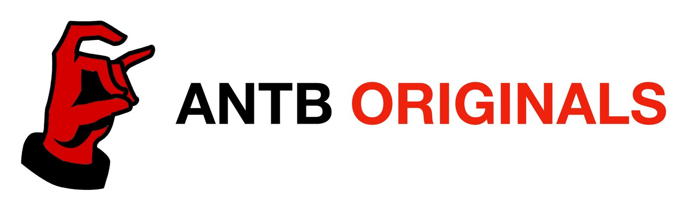
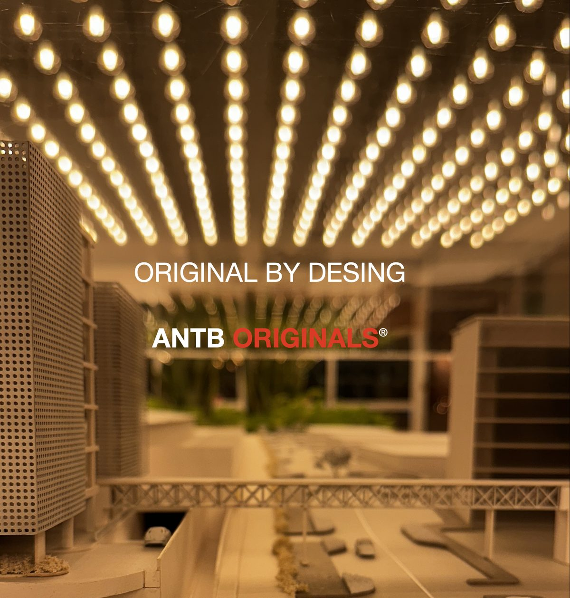
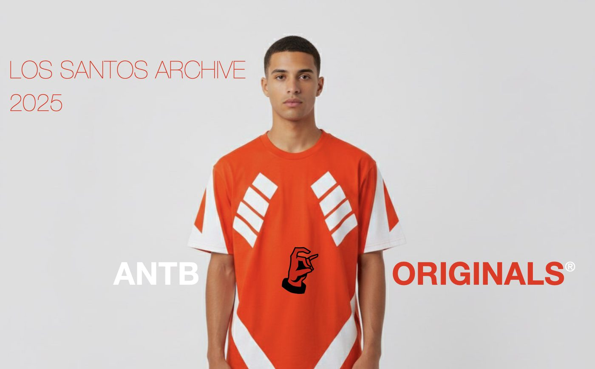
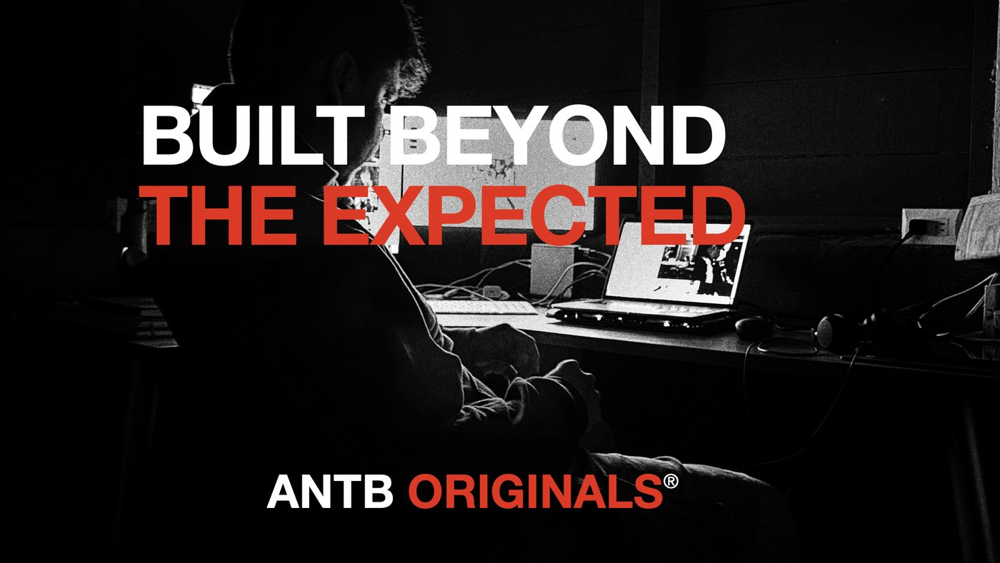
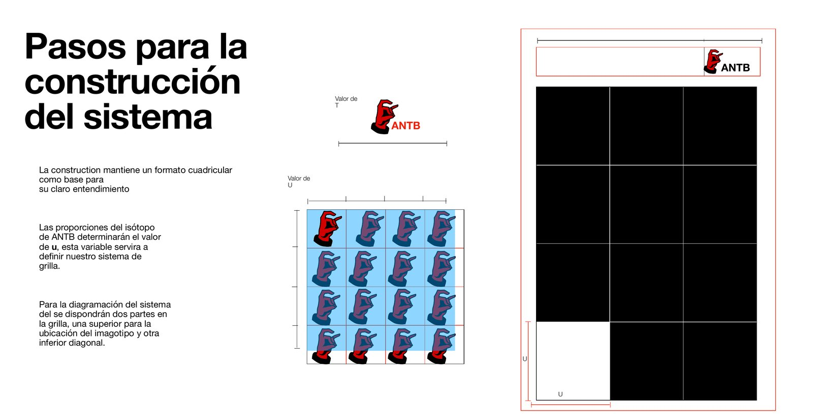
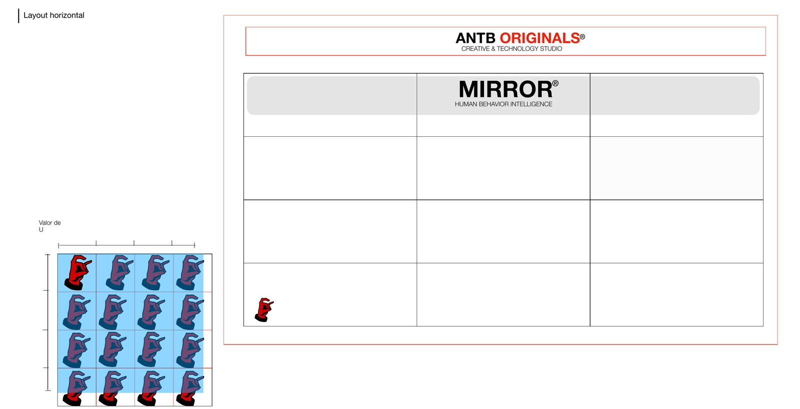
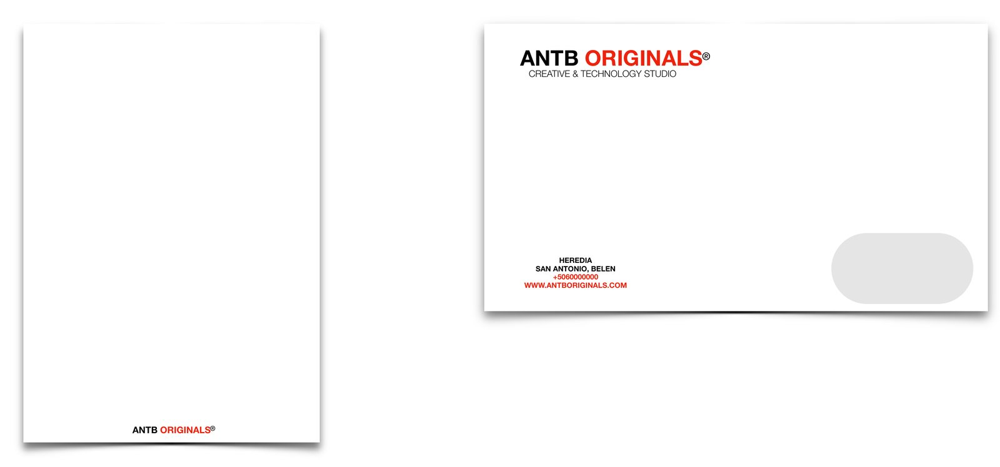

Manual de marca · Libro I · Los Santos Edit
ANTB ORIGINALS®
Manual de marca
Esta es una version editada de los libros del manual de marca originales para ANTB ORIGINALS, tampoco es la version web original entregada al equipo.
Utiliza las normas mas no se rige bajo el estándar comercial.
Rev. LOS SANTOS Apr. ANTB
Parte I
Fundamentos
Existe para reducir la distancia entre una buena idea y la ejecución.
El estudio combina pensamiento creativo, diseño, ingeniería & criterio comercial para construir soluciones que puedan venderse, utilizarse y escalarse.
Con capacidad para desarrollar un ecosistema.
ANTB trabaja con empresas & creadores
Todo un equipo con un objetivo
- Diseñadores
- Diseñadores gráficos
- Analistas de datos
- Desarrolladores de software
- Artistas
- Analistas comerciales
- QA Especialist
- Editores
- Diseñadores UX/UI
ANTB reúne bajo una misma dirección
La integración de estos diferenciadores dirigidos por cada especialista hacen una propuesta de valor clara.
Parte I
Personalidad
Los atributos de personalidad van de la mano con la tipografía & los atributos de comportamiento.
- Comunicación claraLas áreas trabajan bajo una comunicación coherente que facilita el entendimiento y la comunicación
- Comunicar lo ImportanteTransmitir información clara, relevante, sin ambiguedades
- Lenguaje CompartidoLas áreas convergentes en un estudio deben de unificar terminos y conceptos para evitar diferencias de interpretación.
Parte I
Público meta
Los Santos Edit
Parte I
Voz de marca
VOZ DE MARCA
FORMALIDAD: INSTITUCIONAL
TONO:DIRECTO
Parte II
Sistema de logos
Concepto visual
Con contornos negros gruesos, rellenos de rojo y áreas negras internas. La irregularidad controlada del dibujo, la mano humana en forma cultural y expresiva que contrasta con el carácter geométrico del woodmark.

Parte II
Sistema cromático
Parte II
Sistema tipográfico
Built beyond the expected
Parte II
Sistema fotográfico



Parte III
Arquitectura de composición
Pasos para la construcción del sistema
- 01
La construction mantiene un formato cuadricular como base para su claro entendimiento.
- 02
Las proporciones del isótopo de ANTB determinarán el valor de u, esta variable servirá a definir nuestro sistema de grilla.
- 03
Para la diagramación del sistema se dispondrán dos partes en la grilla, una superior para la ubicación del imagotipo y otra inferior diagonal.


Parte III
Sistema de aplicaciones
El imagotipo, logotipo e isotipo se debe utilizar en todos los documentos oficiales de ANTB ORIGINALS, así como en sus proyectos de investigación, colaboraciones comerciales, publicaciones institucionales y demás comunicaciones corporativas respetando las consideraciones de uso antes mencionadas.

ANTB ORIGINALS®
CREATIVE & TECHNOLOGY STUDIO
Descargar el manual en PDF